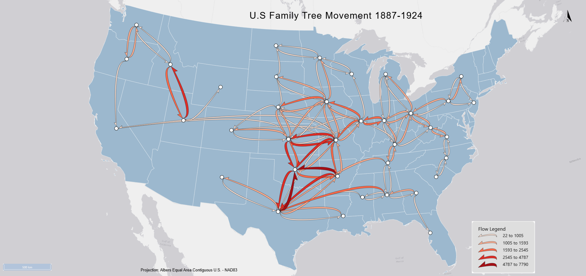

The places that attract the most and biggest flows appear to be Oklahoma City and Dallas. The places that send the most flows appear to be Dallas, which seems to function as a major source and destination node. The general direction on the flow seems to be southern and central, with many flows connecting Texas, Oklahoma, Kansas, and nearby states. There are also some east-west connections across the Plains and Midwest, but fewer major flows to the far West Coast or Northeast. In relation to the location characteristics, the people in the Midwest/middle of the US seem to be moving around the most. Not every state has a node symbol and flows, but the ones that do exist are highly concentrated in the middle of the US. This suggests that migration in this family tree dataset was centered around expanding settlement areas and transportation routes in the interior United States. There aren't very many long flows, which makes sense for this time period as not everyone had a car yet for easy moving, and long-distance migration would have been more difficult and expensive.